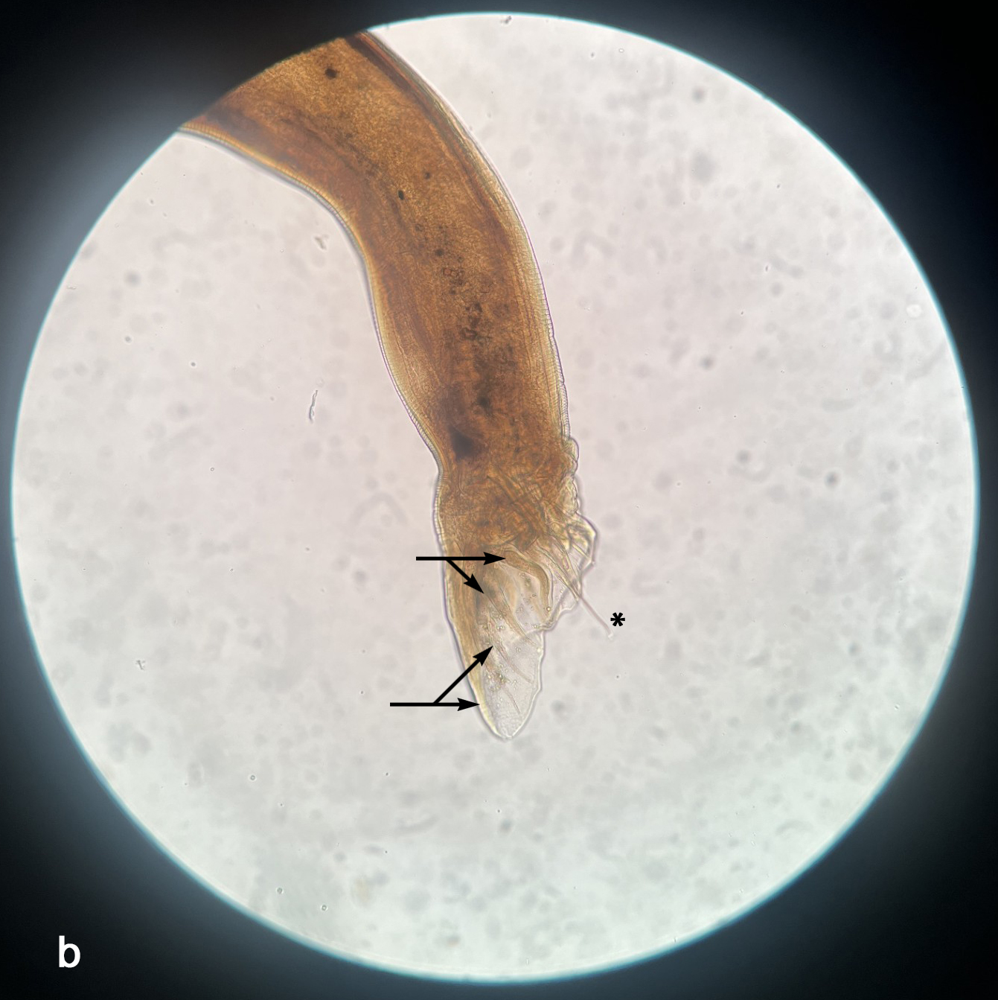

7 - Fotomicrografías de Cylicocyclus insigne, ciatostomino de équidos.

a) Parte anterior (40×) donde se observa la cápsula bucal en forma de copa con sus papilas (*) y folias (flechas) de la corona bucal.

❮
❯
b) Porción posterior del macho bursado (10×) donde se observan los rayos o costillas (flechas) y las espículas expuestas (*).